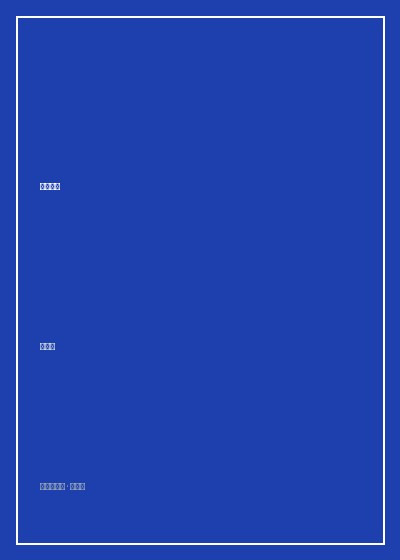

《苏东坡传》

总体观点
苏东坡是中国文化史上罕见的‘伟大全能天才与乐天巨星’。他不仅是词宗、古文名家、大书法家与文人画开山鼻祖，更是卓越的水利工程师、地方父母官、酿酒师、美食家与悲悯哲人。林语堂以跨越东西方文明的宽广视野指出：苏东坡代表了中华文明在儒家之入世济民、道家之超然物外与禅宗之顿悟圆通之间最完美的精神化身。
苏东坡的一生是一部在北宋党争政治绞杀中‘随缘自适、苦难成金’的心灵成长史。从青年登科名满天下，到卷入新旧党争遭御史台诬告陷害投入‘乌台诗案’九死一生，再到黄州、惠州乃至荒蛮儋州的一贬再贬，苏东坡遭遇了常人难以承受的政治迫害与生活绝境。然而他从未陷入怨天尤人的刻毒，反而在风雨漂泊中将生命淬炼出‘一蓑烟雨任平生’的旷达佛心。
苏东坡的人格魅力核心在于他的‘浩然赤子之心与浩荡人道主义’。他视天下无不可交之人，对皇帝直言进谏不计祸福，对杭州、徐州水灾中颠沛流离的贫苦百姓则倾囊相助、修筑苏堤与安乐坊。正是这颗毫无城府、热爱美食、眷恋亲友并对天地万物抱有无限深情的赤子之心，使他穿越千载风霜，成为每一个中国人精神低谷时最亲切的心灵导师。
核心观点
-
1. 乌台诗案的炼狱与赤壁顿悟
因反对新法中急功近利的苛政，苏东坡遭新党御史李定、舒亶罗织诗句构陷下狱，百日严刑拷打几近丧命。这场生死劫难洗尽了他早年的轻狂虚名，他在被贬黄州后脱胎换骨，写出了旷古绝伦的《赤壁赋》与《念奴娇·赤壁怀古》。
神宗皇帝手下御史逼供极惨，东坡在狱中曾与儿子约定送肉为死囚信号；出狱贬谪黄州后，他自称‘东坡居士’，躬耕东坡荒地，完成了从文坛士大夫向超凡觉者的伟大蜕变。 -
2. 黄州躬耕与东坡肉的美食哲学
在生活极度拮据、薪俸断绝的黄州，苏东坡带领全家披荆斩棘开荒种麦，自制农具。面对当地人不屑食用的贱肉猪肉，他发明了‘慢著火，少著水，火候足时他自美’的东坡肉，将穷困潦倒的流放生活过成了活色生香的美食乐园。
《猪肉颂》生动记录东坡在黄州‘净洗铛，少著水，柴头罨烟焰不起’的烹饪自得，展现了道家随遇而安、物各付所值的超拔智慧。 -
3. 杭州任上的修堤惠民与安乐坊创举
重返杭州知州任上，面对西湖葑草淤塞，东坡发动全城民工疏浚西湖，利用挖出的淤泥杂草筑起纵贯南北的苏堤，并建造中国历史上第一所公立平民传染病医院‘安乐坊’，将经世济民的儒家理想落实为永恒功德。
如今西湖‘苏堤春晓’杨柳依依，当年东坡不仅改善了杭州全城饮水与农田灌溉，更在瘟疫蔓延时自制圣散子药方救活千千万万底层贫民，杭城百姓家家挂其画像感念。 -
4. 儋州天涯孤岛的文化拓荒
六十二岁高龄被贬至瘴气弥漫、食无肉居无室的荒蛮海南岛，换作常人早已绝望等死。苏东坡却在儋州与黎族乡民结为至交，搭草棚为书院传授经学，培养出了海南历史上第一位进士姜唐佐，将中原文化的火种播撒在南海天涯。
在儋州缺粮少米时，东坡甚至在海边教黎民剖生蚝、烤蚝肉并幽默给弟弟写信：‘切不可让朝中仇敌知道，否则他们也要跑来海南分一杯羹了！’乐观至极令人动容。 -
5. 兄弟情深：夜雨对床的终生誓约
苏东坡与弟弟苏辙（子由）的深厚手足之情在中国文化史上堪称传奇典范。二人早年在怀远驿听雨约定‘夜雨对床，退隐林下’；在乌台诗案中子由愿纳官爵为兄赎罪，中秋月圆之夜《水调歌头·明月几时有》正是写给子由的千古绝唱。
分析‘但愿人长久，千里共婵娟’的创作背景：东坡在密州中秋大醉通宵作词，所思念牵挂者非帝王宫廷亦非红颜知己，唯有一别数载的至亲手足苏辙，展现纯粹人性温光。
全书思维导图 · 知识脉络树
全书结构
-
第一卷 童年与青年：眉山钟灵毓秀与名动京师
追溯四川眉山苏氏家风、慈母程夫人教诲与三苏父子出蜀，记录嘉祐二年欧阳修主考下苏轼一举名震汴京的春风得意。
欧阳修读完苏轼试卷后欣喜若狂对梅尧臣赞叹：‘读轼书，不觉汗出，老夫当退让此人，使之出人头地！’文坛盟主当场交棒。 -
第二卷 壮年入仕：凤翔判官与反对王安石新法
步入仕途初期见证民间疾苦，因秉持温和改良常识直言上书批判王安石激进青苗法，自请外放杭州通判与密州知州。
在密州超然台上作《望江南》，并亲率差役在雪夜野外搜救弃婴抚养，展现儒家‘致君尧舜上，再使风俗淳’的仁者担当。 -
第三卷 乌台诗案与黄州重生：东坡居士的诞生
全书戏剧性巅峰，复盘御史台黑牢百日严刑逼供，神宗皇帝赦免后被贬黄州，躬耕东坡、开创宋词豪放派与筑‘雪堂’的脱胎换骨。
夜游赤壁，清风徐来水波不兴，与客携酒泛舟吹箫，借《赤壁赋》中‘寄蜉蝣于天地，渺沧海之一粟’参透宇宙人生的永恒与刹那。 -
第四卷 朝堂翻云覆雨：主政杭州与晚年再贬
旧党司马光上台后召回东坡却因其兼听包容再次不容于朝堂；外放知杭州浚西湖筑苏堤，随后在绍圣党争中被章惇一贬惠州、再贬儋州。
在惠州写下‘日啖荔枝三百颗，不辞长作岭南人’，让政敌章惇怒不可遏，咬牙将其发配至隔绝汪洋大海的海南荒岛。 -
第五卷 天涯海南与北归仙逝：完满的人格史诗
记录儋州三年拓荒授徒、与黎族和乐相融的传奇，徽宗即位大赦渡海北归，常州病榻前向儿子从容留下‘着力即差’的人生最后遗言。
自题金山画像诗总结波澜壮阔的一生：‘心似已灰之木，身如不系之舟。问汝平生功业，黄州惠州儋州。’将所有苦难视作勋章。